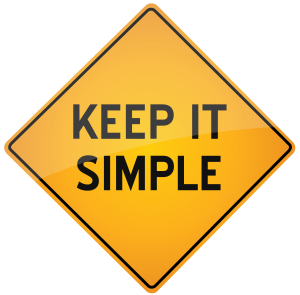

KISS (англ. keep it simple, stupid — буквально — «делай это проще, тупица» или более вежливый вариант англ. keep it short and simple — «делай короче и проще») — процесс и принцип проектирования,
при котором простота системы декларируется в качестве основной цели и/или ценности. Имеют хождение разные расшифровки этого акронима.
Эрик Рэймонд в своей книге резюмирует философию UNIX как широко используемый принцип KISS.
Wikipedia